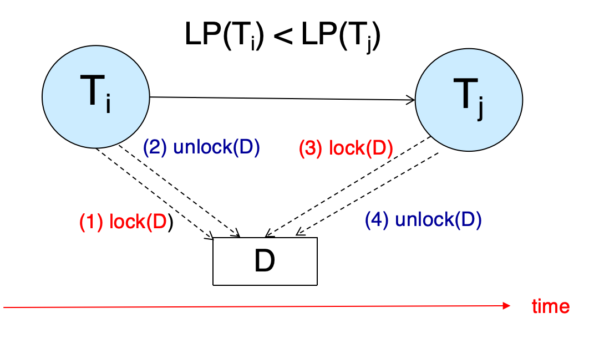
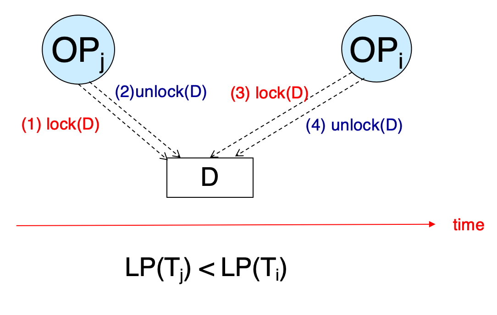
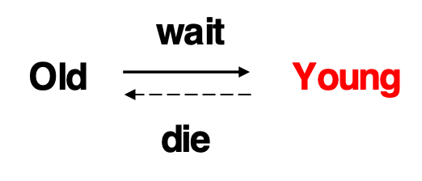
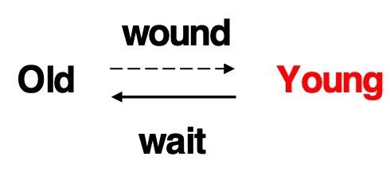

并发控制¶
约 2626 个字 16 张图片 预计阅读时间 13 分钟
Lock-Based Protocols(基于锁的协议)¶
我们使用锁来控制对数据的访问,以确保在并发环境中数据的一致性和完整性。锁可以是独占锁或共享锁。
-
共享锁(S): 允许多个事务同时读取数据，但不允许修改。也即,数据是只读的
-
独占锁(X): 允许一个事务对数据进行修改，其他事务不能读取或修改该数据。也即,对拥有锁的事务而言,数据是可读可写的
-
对于同一个数据项,锁之间的排斥关系为:
-
如果一个事务持有共享锁,那么其他事务可以申请共享锁,但不能申请排他锁
-
如果一个事务持有排他锁,那么其他事务不能申请任何类型的锁
-
一个事务执行锁操作的例子:
{kind=link}
Example for lock
但,这样简单的操作无法保证事务可串行化,如果A,B在读取的中间发生了更新,那么结果就会不一致.
还有死锁的情况:
{kind=link}
Deadlock
Neither \(T_3\) nor \(T_4\) can make progress — executing
lock-S(B)causes \(T_4\) to wait for \(T_3\) to release its lock on Bwhile executing
lock-X(A)causes \(T_3\) to wait for \(T_4\) to release its lock on A.Such a situation is called a deadlock.
为此,我们引入locking protocol的概念.
The Two-Phase Locking Protocol¶
{kind=link}
Two-Phase Locking Protocol
两个阶段:
-
Growing Phase: 事务可以申请锁,但不能释放锁
-
Shrinking Phase: 事务可以释放锁,但不能申请锁
-
两个阶段转换的标志是事务释放第一个锁
-
分界线是事务获得最后一个锁的时间,被称为lock point
-
按照lock point的顺序排序,得到一个调度,这个调度是可串行化的
2PL-Proof¶
-
by Contradiction
- 若在前驱图中,\(T_i\)到\(T_j\)有一条边,那么\(LP(T_i)\)在\(LP(T_j)\)之前

Contradiction -
by Induction
-
令\(T_i\)是最小锁点的事务,若\(T_j\)中有操作会阻碍\(T_i\)中的某个操作
-
那么\(T_j\)的锁点在\(T_i\)的锁点之前

Induction -
{kind=link}
{kind=link}
基本的二阶段锁协议上延伸拓展出了一些其他的锁协议,为了保证可恢复的调度:
-
Strict Two-Phase Locking Protocol: 事务在commit/abort之前,不能释放任何排他锁
- 这样,就能保证在该事务出现需要回滚的情况下,不会有其他事务读到它写的数据
-
Rigorous Two-Phase Locking Protocol: 事务在commit/abort之前,不能释放任何锁
{kind=link}
{kind=link}
Lock Conversion¶
锁可以升级和降级
-
在Growing Phase中,可以将S锁升级为X锁,但不能将X锁降级为S锁
-
在Shrinking Phase中,可以将X锁降级为S锁,但不能将S锁升级为X锁
{kind=link}
{kind=link}
Implementation of Locking¶
A lock manager can be implemented as a separate process to which transactions send lock and unlock requests
Lock Table¶
{kind=link}
Lock Table
在minisql中,lock_table_是一个unordered_map,由RowId(数据项)映射到锁请求队列
Deadlock Handling¶
System is deadlocked if there is a set of transactions such that every transaction in the set is waiting for another transaction in the set.
我们上面使用的二阶段锁协议,并不能保证没有死锁的发生,所以我们需要一个死锁处理机制.
-
Deadlock prevention protocols确保系统永远不会进入死锁状态,有如下几种方法
-
执行前获得所有锁(Require that each transaction locks all its data items before it begins execution (predeclaration))
-
制定偏序关系,
-
a transaction can lock data items only in the order specified by the partial order (graph-based protocol).
-
e.g. \(T_1\): A-50, B+50. \(T_2\): B-10, A+10. 我们可以强制\(T_2\)先执行A+10,然后执行B-10,这样就不会发生死锁
-
-
Timeout-Based Schemes
-
事务在等待锁时,如果超过了某个时间限制,就放弃等待,并回滚
-
这种方法的缺点是可能会导致不必要的回滚,但它是最简单的死锁处理方法
-
-
-
还有一些利用事务的时间戳来避免死锁的方法,比如:
-
Wait-Die Scheme
-
如果一个事务请求一个锁,而这个锁已经被一个比它早开始的事务持有,那么这个事务就会被终止(死掉)(Younger transactions never wait for older ones; they are rolled back instead)
-
否则,如果这个事务比持有锁的事务早开始,那么它就会等待(older transaction may wait for younger one to release data item)

Wait-Die Scheme -
-
Wound-Wait Scheme
-
如果一个事务请求一个锁,而这个锁已经被一个比它晚开始的事务持有,那么晚开始的事务会被直接终止(older transaction wounds (forces rollback) of younger transaction instead of waiting for it.)
-
否则,如果这个事务比持有锁的事务晚开始,那么它就会等待(Younger transactions may wait for older ones.)

Wound-Wait Scheme -
-
Both in wait-die and in wound-wait schemes, a rolled back transactions is restarted with its original timestamp. Older transactions thus have precedence over newer ones, and starvation is hence avoided.
-
{kind=link}
{kind=link}
Deadlock Detection¶
Minisql中也实现了.构建一个有向等待图.
-
若\(T_i\)等待\(T_j\),那么就有一条边\(T_i \to T_j\)
-
如果图中有环,那么就发生了死锁
Example
There are 6 transactions(T1-T6) and 6 data items(I1, I11, I5, I15, I9, I19, I29). Granted locks are filled (black) rectangles, while waiting requests are empty rectangles.
{kind=link}
Deadlock Detection
T1 等 T2, T2 等 T6, T6 等 T1(死锁)
T5等T6,T4等T3
Deadlock Recovery¶
-
When deadlock is detected :
-
Some transaction will have to rolled back (made a victim) to break deadlock. Select that transaction as victim that will incur minimum cost.
-
Rollback -- determine how far to roll back transaction
-
Total rollback: Abort the transaction and then restart it.
-
More effective to roll back transaction only as far as necessary to break deadlock.
-
-
Starvation happens if same transaction is always chosen as victim. Include the number of rollbacks in the cost factor to avoid starvation
-
Graph-Based Protocols¶
我们讲数据项按某种偏序关系排序.如果\(d_i\)到\(d_j\)有一条边,那么对于需要同时访问\(d_i\)和\(d_j\)的事务,就需要先访问\(d_i\),再访问\(d_j\)
{kind=link}
Graph-Based Protocols
Tree Protocols¶
树协议是图协议的一种特殊情况
-
只允许申请排他锁
-
对于某个事务\(T_i\),它申请的第一个节点可以是任意的,当之后,一个节点Q能被\(T_i\)锁住,当且仅当Q的父节点被\(T_i\)锁住
-
数据项可以在任何时候被释放锁
-
如果数据项Q被\(T_i\)锁住又释放,那么\(T_i\)不能再申请Q的锁
{kind=link}
Tree Protocols
这样做,可以保证冲突可串行化.
-
优点:
-
释放锁比2PL更早,减少等待时间,提高并发度
-
无死锁,不需要rollback
-
-
缺点:
-
不能保证可恢复,需要多加限制
-
事务可能需要锁住比实际需求更多的数据项
-
Multiple Granularity(多粒度)¶
数据项可以表示为一个树的结构,根据其大小
{kind=link}
The Tree
那么:
-
fine granularity（细粒度）:对树偏下的节点加锁,比如对叶子节点加锁
-
coarse granularity（粗粒度）:对树偏上的节点加锁,比如对根节点加锁
Intention Locks¶
当事务涉及到多个粒度时,会产生不同级别上的锁冲突.比如,一个表的S锁和一个表中某个数据项的X锁之间会产生冲突.因此,我们引入意向锁(想要加某个锁)的概念
-
Intention-Shared Lock (IS): 事务想要在某个数据项上加一个共享锁,那么在这个数据项的父节点上加一个意向共享锁
-
Intention-Exclusive Lock (IX): 事务想要在某个数据项上加一个排他锁,那么在这个数据项的父节点上加一个意向排他锁
-
Shared-Intention-Exclusive Lock (SIX): S+IX锁,对当前节点有共享锁,且对子节点有排他锁
- SIX锁主要用于这种场景：事务需要读取某个高级节点（如表）的所有数据，同时还需要更新其中的部分低级节点（如记录）。
现在,所有锁的兼容性表是(Y for yes, N for no):
| 请求的锁⬇️ 已有的锁➡️ | IS | IX | S | SIX | X |
|---|---|---|---|---|---|
| IS | Y | Y | Y | Y | N |
| IX | Y | Y | N | N | N |
| S | Y | N | Y | N | N |
| SIX | Y | N | N | N | N |
| X | N | N | N | N | N |
意向锁更像是一种声明而非真正的锁
Insert and Delete Operations¶
-
If two-phase locking is used :
-
A delete operation may be performed only if the transaction deleting the tuple has an exclusive lock on the tuple to be deleted.
-
A transaction that inserts a new tuple into the database is given an X-mode lock on the tuple
-
-
为了避免幽灵问题(比如一个事务在统计表中元组数目,一个事务在插入元组)
-
可以使用表级的锁
-
可以把元组数目和另一个额外的一个元组联系,读元组数目的事务需要在这个元组上加共享锁,而插入元组的事务需要在这个元组上加排他锁
-
最好的方法是使用Index locking protocols
-
Index Locking Protocols¶
通过在索引上加锁来避免幽灵问题
-
Every relation must have at least one index.
-
A transaction can access tuples only after finding them through one or more indices on the relation
-
A transaction \(T_i\) that performs a lookup must lock all the index leaf nodes that it accesses, in S-mode
- Even if the leaf node does not contain any tuple satisfying the index lookup (e.g. for a range query, no tuple in a leaf is in the range)
-
A transaction \(T_i\) that inserts, updates or deletes a tuple \(t_i\) in a relation r
-
must update all indices to r
-
must obtain exclusive locks on all index leaf nodes affected by the insert/update/delete
-
-
The rules of the two-phase locking protocol must be observed
Next-Key Locking¶
上面的做法需要锁住所有的叶子节点,会大大降低并发度,因此还有一种方法:
-
Lock all values that satisfy index lookup (match lookup value, or fall in lookup range)
-
Also lock next key value in index
-
Lock mode: S for lookups, X for insert/delete/update
Multiversion Concurrency Control Schemes¶
不考
大概就是像git一样,每次写数据项不是直接覆盖,而是创建一个新的版本,带一个版本号,旧的版本被保留.
这样,任何读取操作都不需要等待,可以直接进行,只要根据版本号来读取数据项即可
这样就只有两类操作:
-
只读事务
-
Assigned a timestamp by reading the current value of ts-counter before they start execution.
-
When a read-only transaction \(T_i\) issues a read(Q), the value returned is the contents of the version whose timestamp is the largest timestamp less than or equal to \(TS(T_i)\)
-
-
更新(读写)事务
-
Acquire read and write locks
-
Hold all locks up to the end of the transaction. That is , follow rigorous two-phase locking.
-
Each successful write results in the creation of a new version of the data item written.
-
Each version of a data item has a single timestamp whose value is obtained from a counter ts-counter that is incremented during commit processing.
-